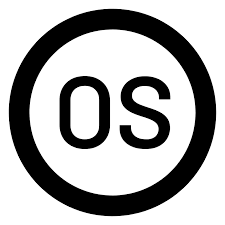

Az Apple Vision Pro egy innovatív technológia, amely a gépi látás és a mesterséges intelligencia erejét kombinálja az Apple eszközökön. Ez a rendszer lehetővé teszi az eszközök számára, hogy értelmezzék és reagáljanak a környezetükben zajló eseményekre és helyzetekre. A Vision Pro elősegíti azokat a fejlett funkciókat, mint például az objektumfelismerés, az arcfelismerés és az automatikus címkézés, amelyek elősegítik a felhasználói élményt. Ezen felül segít az eszközöknek jobban megérteni és alkalmazkodni a felhasználók igényeihez és szokásaihoz, hogy személyre szabottabb szolgáltatásokat nyújtsanak. A Vision Pro része az Apple által folytatott törekvésnek, hogy vezető szerepet töltsön be a mesterséges intelligencia és a gépi tanulás terén, miközben fenntartja a felhasználók személyes adatvédelmét és biztonságát.
 Láthatatlanulteszi a digitalizációt a világodba
Láthatatlanulteszi a digitalizációt a világodba
 Az írányításhoz csak szimplán használd a kezed
Az írányításhoz csak szimplán használd a kezed
 Elképesztő moziélmény bárhol, bármikor
Elképesztő moziélmény bárhol, bármikor
Az Apple első térbeli operációs rendszere.
Gesztusok segítségével az Apple Watch még könnyebben használható bármikor, különösen akkor, ha tele van a keze. Csak érintse meg duplán a mutató- és hüvelykujját a hívás fogadásához, egy értesítés megnyitásához, a zene lejátszásához és szüneteltetéséhez, stb.
 Állítsd és indítsd el a zént bevásárlásod cipelése közben
Állítsd és indítsd el a zént bevásárlásod cipelése közben
 Vedd fel a hívást miközben a tengeren kajakozol
Vedd fel a hívást miközben a tengeren kajakozol
 Állítsd meg az időzítőt a sütögetés közben
Állítsd meg az időzítőt a sütögetés közben